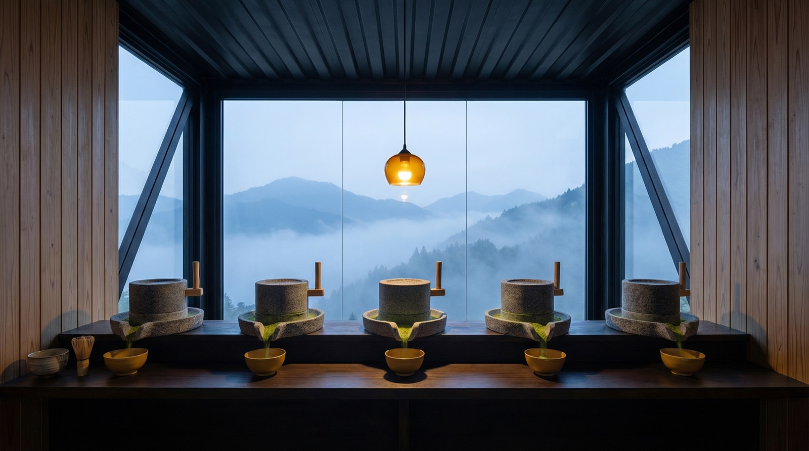
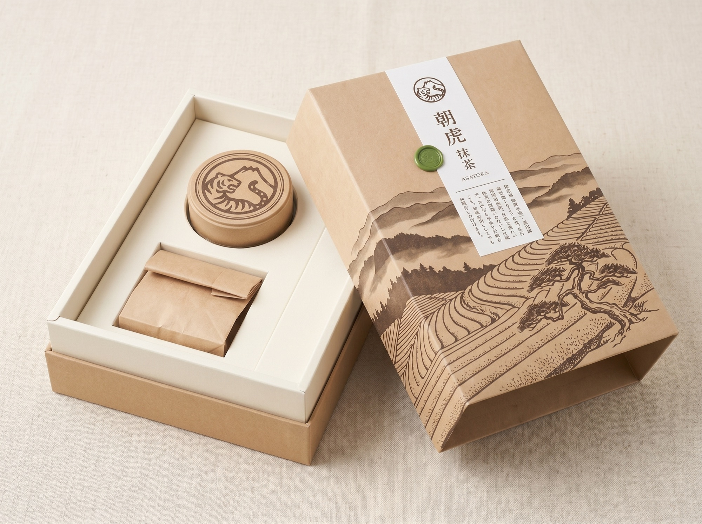
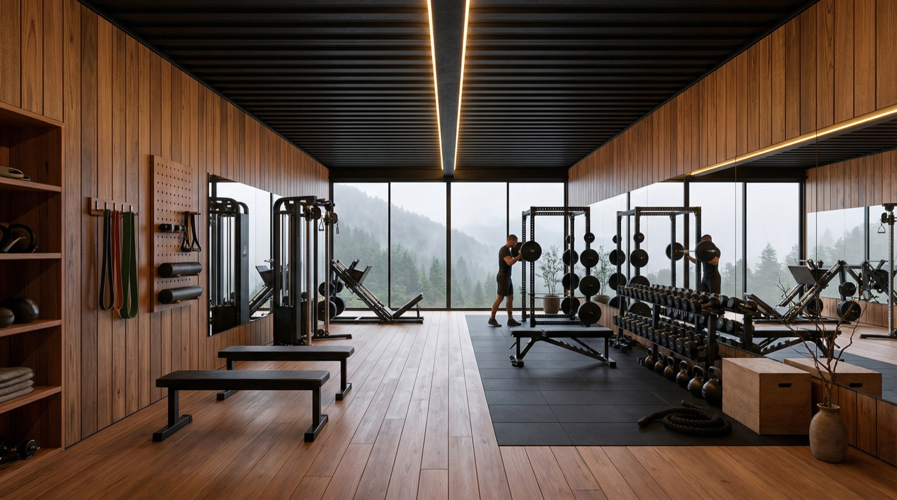
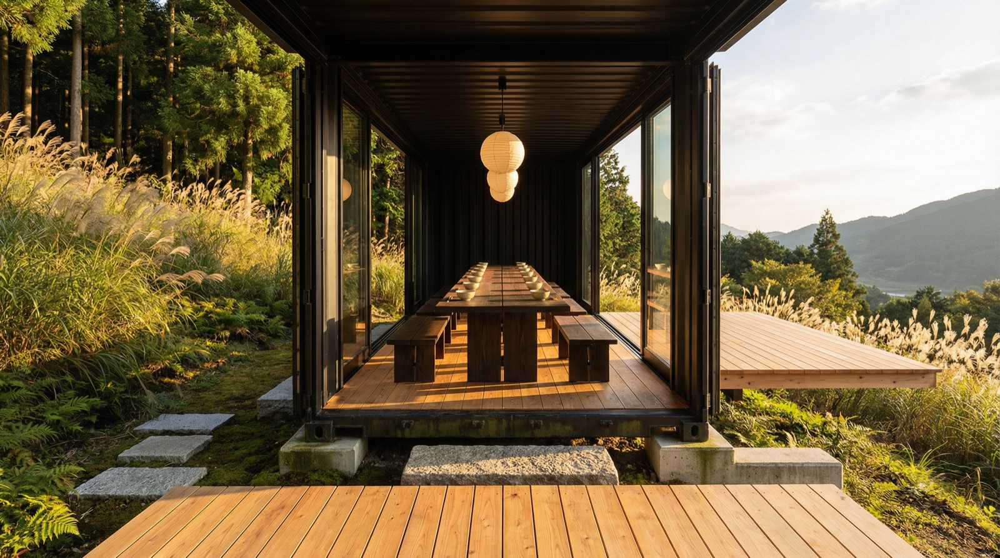
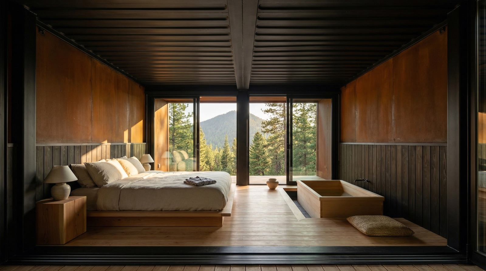

01
The signature tin
30g, finished in small batches
Shade-grown on a single garden in Shibushi, stone-milled and sealed by hand under a green wax mark.
¥4,800


01
The signature tin
Shade-grown on a single garden in Shibushi, stone-milled and sealed by hand under a green wax mark.
¥4,800
02
The refill bag
The same single-origin matcha in a kraft refill — less to carry home, the ritual unbroken.
¥4,200
03
Provenance
Every tin is traceable to a single working tea mountain in Shibushi, Kagoshima — never blended, never anonymised.
Provenance
Grown under shade at 正福茶園, stone-milled in small batches at first light.
鹿児島・志布志 正福茶園
From the mountain

The first hour is silent
Five stone mills at dawn

Eight at the long table

One room. One mountain.
Quiet dispatches from a working tea mountain in Kagoshima.
The Retreat
A Bushido practice on the Shibushi mountain where the matcha is grown. Opening soon.
Join the waitlistThe Mountain Letter
Harvest news, brewing notes, and quiet dispatches — weekly.